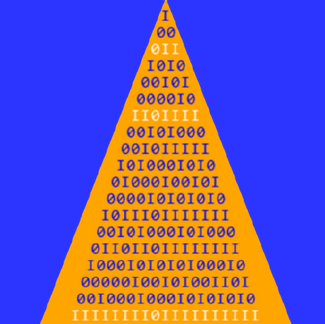

Julia implementations of integer triangles.
We give a framework for computing mathematical integer triangles and use it to create so called "Trait Cards".
A trait card is a compilation of the essential characteristics of an integer triangle, whereby we understand the characteristics of a triangle to be integer sequences that can be obtained from the triangle by elementary transformations.
Overview tables can be automatically generated for a variety of triangles and traits.
| A-Number | Triangle | Form | Function | Sequence |
|---|---|---|---|---|
| A000302 | Binomial | Std | PolyVal3 | 1, 4, 16, 64, 256, 1024, 4096, 16384 |
| A001333 | SchroederB | Inv | AltSum | 1, -1, 3, -7, 17, -41, 99, -239 |
| A006012 | SchroederL | Inv | AltSum | 1, -2, 6, -20, 68, -232, 792, -2704 |
| A026302 | Motzkin | Rev | Central | 1, 2, 9, 44, 230, 1242, 6853, 38376 |
| A103194 | Laguerre | Std | TransNat0 | 0, 1, 6, 39, 292, 2505, 24306, 263431 |
| A111884 | Lah | Std | TransAlts | 1, -1, -1, -1, 1, 19, 151, 1091 |
| nothing | Laguerre | Rev | TransNat1 | 1, 3, 15, 97, 753, 6771, 68983, 783945 |
Important: Note that we assume all sequences to start at offset = 0. Also note that all references to A-numbers are approximativ only, i.e. the first few terms of the sequence may differ and the OEIS-'offset' is always disregarded.
To use this feature you have to download the file stripped.gz from oeis.org, expand it and put it in the 'data' directory.
To see what you can expect start by executing
using IntegerTriangles
TraitCard(BinomialTriangle, 8)You can also look at the demo notebook.
An introduction to the project can be found in: